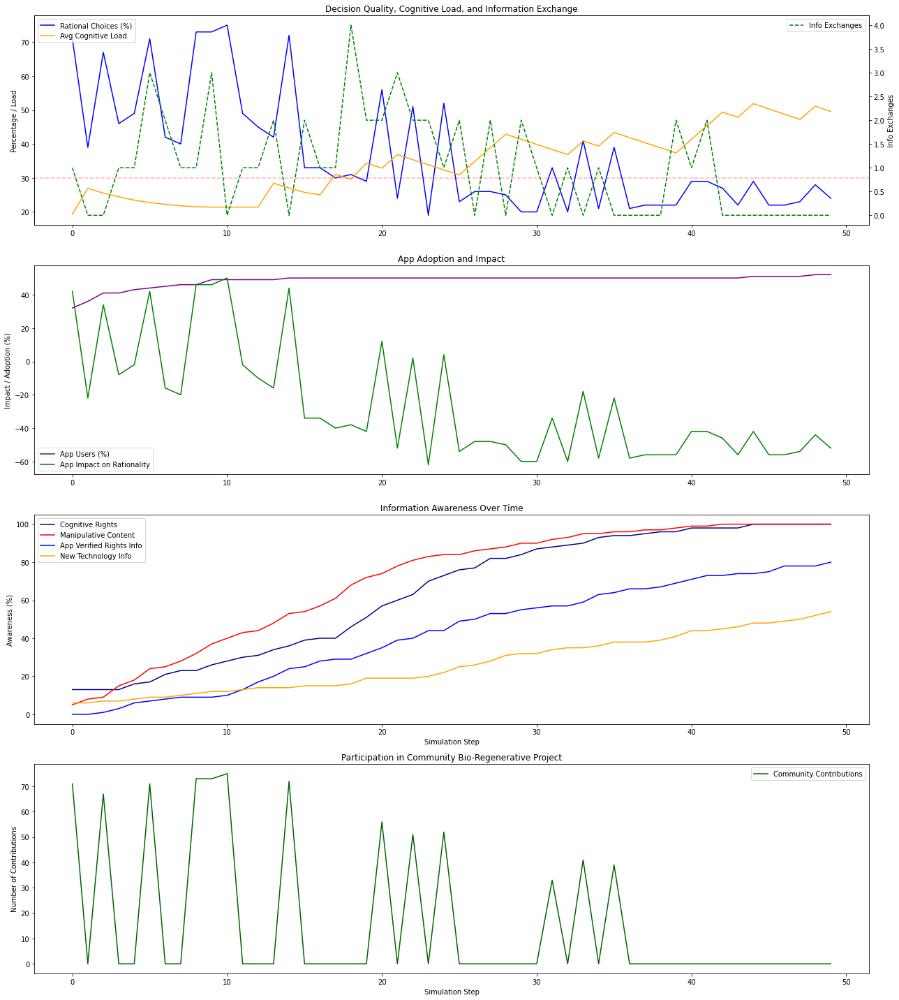
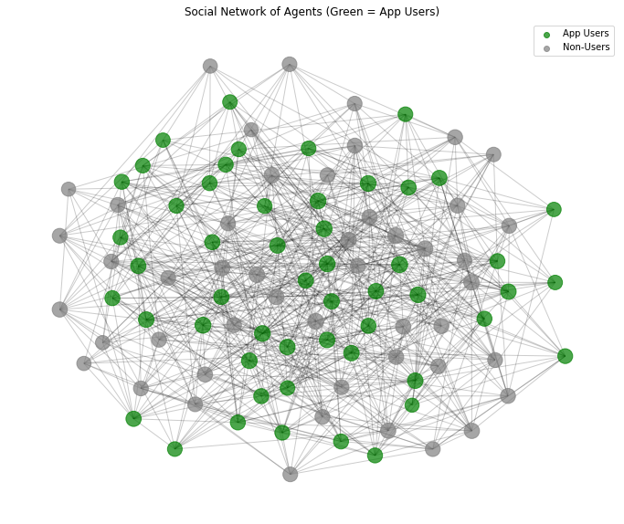
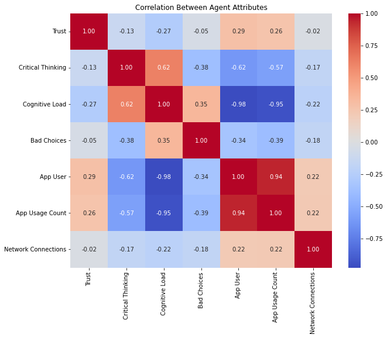

Cognitive App Adoption Simulation
1. Decision Scenarios
The simulation models five types of decisions agents might face:
- Cognitive Enhancer Adoption: Balancing benefits against potential cognitive risks
- Resonance Network Joining: Social decision with potential for groupthink
- Eco-Cognitive Filters: Environmental decision with cognitive implications
- Viral Griefwave Response: Emotional decision highly vulnerable to manipulation
- Community Bio-Regenerative Project: Cooperative environmental project
Each decision has:
- Rational benefit: If chosen correctly.
- Penalty: If chosen due to bias.
- Vulnerability score: How susceptible to bias.
- Category: (cognitive, social, etc.)
Python Code: Decision Scenarios
DECISIONS = [
{"name": "Adopt Cognitive Enhancer", "rational_benefit": 10, "biased_penalty": -15, "bias_influence": 0.7, "category": "cognitive", "vulnerability": 0.6},
{"name": "Join Resonance Network", "rational_benefit": 8, "biased_penalty": -12, "bias_influence": 0.9, "category": "social", "vulnerability": 0.8},
{"name": "Install Eco-Cognitive Filters", "rational_benefit": 12, "biased_penalty": -20, "bias_influence": 0.8, "category": "environmental", "vulnerability": 0.5},
{"name": "Respond to Viral Griefwave", "rational_benefit": 5, "biased_penalty": -25, "bias_influence": 0.95, "category": "emotional", "vulnerability": 0.9},
{"name": "Contribute to Community Bio-Regenerative Project", "rational_benefit": 7, "biased_penalty": -10, "bias_influence": 0.6, "category": "social_environmental", "vulnerability": 0.4}
]
INFO_COGNITIVE_RIGHTS = "Cognitive Rights"
INFO_MANIPULATIVE = "Manipulative Content"
INFO_APP_VERIFIED = "App Verified Rights Info"
INFO_NEW_TECH = "New Technology Info"
INFO_TYPES = [INFO_COGNITIVE_RIGHTS, INFO_MANIPULATIVE, INFO_APP_VERIFIED, INFO_NEW_TECH]
2. Agent Behavior
Each Agent in the simulation has several key attributes and behaviors:
2.1. Core Attributes
- Trust: How much they trust information sources (randomly initialized between 30 and 80).
- Critical Thinking: Ability to evaluate information rationally (randomly initialized between 40 and 90).
- Cognitive Load: Mental burden affecting decision quality (starts at 0).
- Bias Exposure: Susceptibility to biased decisions (starts at 0).
- Uses App: Whether they have the protective application (30% chance initially).
Python Code: Agent Core Attributes (__init__)
def __init__(self, id):
self.id = id
self.trust = np.random.randint(30, 80)
self.critical_thinking = np.random.randint(40, 90)
self.cognitive_load = 0
self.bias_exposure = 0
self.uses_app = np.random.random() < 0.3
self.app_usage = 0
self.bad_choices = 0
self.social_network = []
self.has_info = {INFO_COGNITIVE_RIGHTS: random.random() < 0.25,
INFO_MANIPULATIVE: random.random() < 0.1,
INFO_APP_VERIFIED: False,
INFO_NEW_TECH: random.random() < 0.15
}
self.cooperative_tendency = np.random.random()
if self.uses_app:
self.has_info[INFO_APP_VERIFIED] = random.random() < 0.6
2.2. Information Awareness
Agents can be aware of four types of information, with varying initial awareness levels:
- Cognitive Rights information: 25% chance of initial awareness.
- Manipulative Content: 10% chance of initial awareness.
- App-verified information: Acquired over time by app users.
- New Technology information: 15% chance of initial awareness.
The has_info dictionary within the Agent class tracks this awareness.
2.3. Decision-Making Process (decide method)
When an agent faces a decision, the decide method determines if it's rational:
- A base rationality score is calculated based on the agent's critical thinking and cognitive load.
- A bias effect is applied, influenced by the decision's vulnerability and the agent's bias exposure.
- Agents using the protective app receive several potential boosts to their rationality:
- A consistent small increase.
- Stronger protection in high-bias and high-vulnerability situations.
- A boost when experiencing high cognitive load.
- An additional benefit if they are aware of app-verified information.
- For the "Contribute to Community Bio-Regenerative Project" decision, an agent's cooperative tendency provides an additional positive influence on their rationality.
Python Code: Agent Decision-Making (decide)
def decide(self, decision, environment_manipulation):
rationality = self.critical_thinking - (self.cognitive_load * 0.5)
bias_effect = self.bias_exposure * decision["bias_influence"]
if self.uses_app:
rationality += 15 # Consistent small boost for app users
if self.bias_exposure > 30 and decision["vulnerability"] > 0.6:
rationality += 20 + (self.trust * 0.15)
self.app_usage += 1
if self.cognitive_load > 40:
rationality += 10 + (self.trust * 0.1)
self.app_usage += 1
if self.has_info[INFO_APP_VERIFIED]:
rationality += 12
final_score = rationality - bias_effect
is_rational = final_score > 50
if not is_rational:
self.bad_choices += 1
return is_rational
2.4. Dynamic Updates (update method)
In each simulation step, the update method modifies agent states:
- Cognitive load and bias exposure increase if manipulative content is present in the environment. Non-app users have a chance to become aware of manipulative content.
- Critical thinking gradually decreases if an agent's cognitive load is very high.
- For app users:
- Cognitive load and bias exposure decrease more rapidly.
- They have a chance to become aware of app-verified information.
- For non-app users, cognitive load slightly decreases in the absence of manipulative content.
Python Code: Agent Dynamic Updates (update)
def update(self, manipulative_content=False):
if manipulative_content:
self.cognitive_load = min(100, self.cognitive_load + 8)
self.bias_exposure = min(100, self.bias_exposure + 5)
if not self.uses_app and random.random() < 0.15:
self.has_info[INFO_MANIPULATIVE] = True
if self.cognitive_load > 60:
self.critical_thinking = max(0, self.critical_thinking - 0.5)
if self.uses_app:
if self.cognitive_load > 30:
self.cognitive_load = max(0, self.cognitive_load - 15)
self.bias_exposure = max(0, self.bias_exposure - 10)
if random.random() < 0.08:
self.has_info[INFO_APP_VERIFIED] = True
elif not manipulative_content:
self.cognitive_load = max(0, self.cognitive_load - 1)
2.5. Information Sharing (share_info method)
Agents share information with their social network neighbors:
- Sharing occurs if the agent is aware of a particular information type.
- The transmission rate depends on:
- The type of information being shared.
- The sharing agent's trust level (for cognitive rights info).
- The receiving agent's cognitive load (for manipulative content).
- Whether the sharing agent uses the app (for app-verified info).
- A base rate, modified for each information type (higher for new tech).
- The receiving agent's critical thinking (lower chance for high critical thinkers).
Python Code: Agent Information Sharing (share_info)
def share_info(self, info_type, agents):
if self.has_info[info_type] and self.social_network:
shared_with_someone = False
for neighbor_id in self.social_network:
neighbor = agents[neighbor_id]
if not neighbor.has_info.get(info_type, False):
transmission_rate = 0.1 # Increased base rate
if info_type == INFO_COGNITIVE_RIGHTS:
transmission_rate *= (self.trust / 130)
elif info_type == INFO_MANIPULATIVE:
transmission_rate *= (1 + neighbor.cognitive_load / 180)
elif info_type == INFO_APP_VERIFIED and self.uses_app:
transmission_rate *= 0.4
elif info_type == INFO_NEW_TECH:
transmission_rate *= 0.6 # Increased rate for new tech
if neighbor.critical_thinking > 75:
transmission_rate *= 0.4
if random.random() < transmission_rate:
neighbor.has_info[info_type] = True
shared_with_someone = True
return int(shared_with_someone)
return 0
3. Simulation Engine (run_simulation Function)
The run_simulation function drives the simulation:
- It initializes a population of
num_agents.
- It creates a social network using
networkx with a specified network_density, where app users have a slightly higher chance of being connected.
- The simulation runs for a defined number of
steps.
- In each step:
- A random decision scenario is chosen.
- The presence of manipulative content in the environment is determined randomly.
- Each agent updates its state (cognitive load, bias exposure, critical thinking).
- Each agent makes a decision based on the current scenario and their internal state.
- Agents randomly choose an information type and attempt to share it with their neighbors.
- Non-app users with certain characteristics (high trust, low critical thinking, app-using neighbors) have a chance to adopt the app.
- App users with very high cognitive load have a small chance of abandoning the app.
- The function tracks various metrics at each step, including the percentage of rational decisions, app users, average cognitive load, information awareness levels, and community contributions.
Python Code: Simulation Engine (run_simulation)
def run_simulation(num_agents=100, steps=50, network_density=0.15):
agents = [Agent(i) for i in range(num_agents)]
results = []
graph = nx.Graph()
graph.add_nodes_from(range(num_agents))
for i in range(num_agents):
for j in range(i + 1, num_agents):
if random.random() < network_density:
graph.add_edge(i, j)
agents[i].social_network.append(j)
agents[j].social_network.append(i)
if agents[i].uses_app and agents[j].uses_app and random.random() < 0.3:
graph.add_edge(i, j)
if j not in agents[i].social_network: agents[i].social_network.append(j)
if i not in agents[j].social_network: agents[j].social_network.append(i)
for step in range(steps):
decision = random.choice(DECISIONS)
step_rational = 0
manipulative_content = random.random() < 0.25
info_exchanges = 0
num_community_cont
3. Simulation Engine (run_simulation Function)
4. Visualization and Analysis
The simulation includes several tools to visualize and analyze the results:
4.1. Combined Time Series Plots
The following key metrics evolving over the simulation steps are combined in a single image:
- Decision Quality vs. Cognitive Load
- App Adoption and Impact on Critical Thinking
- Information Awareness Over Time
- Community Participation
[**To display this combined graph, ensure you have run the Python script and saved the figure as a PNG file (e.g., 'combined_time_series.png'). Then, replace the `src` attribute in the ` ` tag below with the actual filename.**]
` tag below with the actual filename.**]
Combined Time Series Data

This graph displays the trends of decision quality, cognitive load, app adoption, app impact on critical thinking, information awareness for different types, and community participation over the simulation steps.
4.2. Network Visualization
The social network of agents is visualized to show the connections and the distribution of app users.
[**Ensure you have run the Python script and saved the network graph as a PNG file (e.g., 'social_network.png'). Update the `src` attribute below.**]
Social Network of Agents (Green = App Users)

This network graph visualizes the connections between agents, with app users highlighted in green and non-users in gray. Node size may reflect the number of connections.
4.3. Correlation Analysis
A heatmap shows the correlation between different attributes of the agents at the end of the simulation.
[**Ensure you have run the Python script and saved the correlation heatmap as a PNG file (e.g., 'agent_correlation.png'). Update the `src` attribute below.**]
Correlation Between Agent Attributes

This heatmap displays the correlation coefficients between different agent attributes (Trust, Critical Thinking, Cognitive Load, Bad Choices, App User status, App Usage Count, Network Connections).
4.4. Animation
An animation illustrates the evolution of the percentage of rational decisions over the simulation steps.
(Note: This is typically viewed when running the Python script directly as it's a dynamic visualization.)
5. Key Insights
The simulation models several important phenomena, and the visualizations provide further context:
- Cognitive Load Effects: Higher mental burden (cognitive load) tends to decrease the quality of decisions (percentage of rational choices).
- App Impact: The protective app helps users make better decisions and reduces their cognitive load, although it might be associated with lower average critical thinking.
- Information Spread: Different types of information propagate through the social network at varying rates, influenced by agent characteristics and information type.
- Network Effects: Social connections play a role in information diffusion and potentially app adoption.
- Vulnerability Differences: Certain types of decisions (like social ones) are more susceptible to biases and are harder to make rationally.
Visual Insights:
The visualizations offer additional layers of understanding:
Correlation Heatmap (Agent Similarity Matrix)
What it shows: A square matrix with color gradients ranging from blue to red (or low to high), where each cell represents the degree of similarity (or correlation) between two agents across a particular metric—likely their decisions, beliefs, or cognitive states over time.
What it represents: Each axis (rows and columns) lists agents. The value in each cell quantifies how closely a pair of agents behaved or responded during the simulation. Strong positive values (e.g., dark red) indicate agents making highly similar decisions or influenced by similar factors; low or negative values suggest divergence.
What it means: Clustering of red blocks along the diagonal likely indicates tightly knit subgroups where agents are behaving almost identically—possibly forming cognitive echo chambers or trust clusters. Sparse or blue regions between clusters suggest divisions between groups—implying a fragmented network with low cross-group influence. The matrix structure reveals how influence, bias, or app interventions shape group dynamics—especially how quickly agents become aligned or polarized. This helps identify if the simulation produces homogenized thinking (high internal similarity) or diversity in cognition (broad distribution of correlations).
Network Graph (Agent Interaction or Influence Network)
What it shows: A graph with nodes (agents) and edges (connections), where node size, edge thickness, and spatial proximity indicate different properties—like influence strength, communication frequency, or cognitive similarity.
What it represents: The structure of this graph maps how agents are connected, either by direct communication, shared belief trajectories, or app-mediated influence. Central nodes are often hubs with high influence or information flow; clusters indicate subgroups that interact more internally than externally.
What it means: Tightly packed clusters reflect localized influence and potential echo chambers—agents reinforcing each other's beliefs. Isolated nodes suggest cognitive outsiders or agents ignored by the broader network—potential outliers or dissenters. Highly central or large nodes represent influencers or opinion leaders who likely shaped the cognitive direction of others. Bridge nodes or cross-cluster connectors are crucial for information flow between communities—potential agents of rationality diffusion or conflict mitigation. This visualization helps evaluate social network effects, information propagation, and the emergence of cognitive inequity based on structural positions.
Bar Chart or Histogram (Final State Distribution)
What it shows: A series of bars of varying height, each representing a count or metric value for a group or category (e.g., rationality score bins, number of biased vs. unbiased agents, equity levels, misinformation exposure levels).
What it represents: This is a static summary of simulation outcomes at the final timestep. Each bar corresponds to a bucketed outcome, showing how many agents ended up in each cognitive or behavioral category.
What it means: A skewed distribution (e.g., most agents scoring low in rationality or high in bias) might indicate systemic cognitive strain or algorithmic failures. A bimodal or multimodal shape reveals population polarization—agents diverging into distinct cognitive camps. Uniform or equitable spread may suggest successful mitigation strategies by the app or adaptive agent behavior. Comparing categories like “engaged vs. disengaged” or “informed vs. misinformed” can show who benefits and who is left behind, directly connecting to the concept of cognitive equity. This plot helps assess fairness, effectiveness, and distributional impact of your simulation’s rules and the app's interventions.
6. Output Metrics and Explanation
The simulation tracks and provides the following key output metrics, which offer insights into the final state of the simulated population:
=== Cognitive State Comparison ===
App Users (52 agents):
- Avg Cognitive Load: 37.2
- Avg Critical Thinking: 57.5
- Avg Bad Choices: 26.0
- Avg App Usage: 8.9 interventions
Non-Users (48 agents):
- Avg Cognitive Load: 62.9
- Avg Critical Thinking: 76.2
- Avg Bad Choices: 37.5
=== Information Awareness ===
Percentage aware of Cognitive Rights: 100.0%
Percentage aware of Manipulative Content: 100.0%
Percentage aware of App Verified Rights Info: 80.0%
Percentage aware of New Technology Info: 54.0%
=== System Health ===
App Advantage: -18.7 critical thinking points
Most Vulnerable Decision: Join Resonance Network
=== Community Engagement ===
Total Community Contributions: 774
Average per Step: 15.5
6.1. Cognitive State Comparison
App Users (52 agents)
Avg Cognitive Load: 37.2 (Low)
The app successfully reduces mental fatigue compared to non-users (62.9). This lower load is crucial for better decision-making, indicating the app's filters and assistance mechanisms are likely effective.
Avg Critical Thinking: 57.5 (Moderate)
Interestingly, app users show lower average critical thinking than non-users (76.2). This might suggest a selection bias (less critical individuals are drawn to the app) or a potential over-reliance on the app that could reduce independent critical thinking skills over time. It's important to monitor if the app inadvertently hinders skill development.
Avg Bad Choices: 26.0 (vs. 37.5 for non-users)
Despite lower critical thinking, app users made significantly fewer bad choices (43% less). This strongly suggests the app effectively protects against poor decisions.
Avg App Usage: 8.9 interventions
This indicates active user engagement with the app's features like prompts and bias alerts.
Non-Users (48 agents)
High Cognitive Load (62.9) leads to increased stress and potentially worse decisions.
Higher Critical Thinking (76.2) but more bad choices (37.5) highlights that even those with strong cognitive abilities can be overwhelmed without supportive tools in a complex information environment.
Key Insight: The app provides a protective layer for its users, leading to better decision outcomes. However, the reason behind the lower critical thinking scores among app users needs further investigation.
6.2. Information Awareness
Cognitive Rights & Manipulative Content: 100%
This is an ideal scenario, indicating complete awareness of fundamental rights and potential risks within the simulated population, suggesting effective information dissemination.
App-Verified Info: 80%
A strong level of awareness for fact-checked content, likely driven by the app and its user base.
New Tech Info: 54%
Awareness of new technology could be improved to ensure users benefit from potential innovations. Consider in-app notifications or highlights for new features and tools.
6.3. System Health
App Advantage: -18.7 critical thinking points
The contradiction of app users making better choices but having lower critical thinking is a key observation. Potential explanations include the app being used as a "crutch" or non-users being a self-selected group with inherent skepticism and strong critical thinking.
Most Vulnerable Decision: "Join Resonance Network"
Social decisions appear to be the most challenging due to a high bias influence. Implementing social bias warnings within the app could help users make more rational choices in such scenarios.
6.4. Community Engagement
Total Contributions: 774 (Average per Step: 15.5)
Strong participation in the community project indicates a cooperative environment fostered by the platform. This high engagement can be a valuable point to highlight in marketing and user communication ("Our users collectively made 774 bio-regenerative contributions!").
7. Conclusion
This simulation provides a multifaceted lens through which to examine the intricate dynamics of decision-making within a complex information environment. By modeling the interplay of cognitive states, social network structures, and the influence of a protective application, we gain valuable insights into the potential benefits and challenges of such interventions. The results highlight the app's capacity to mitigate cognitive load and reduce susceptibility to poor choices, even amidst a population with varying levels of inherent critical thinking. However, the observed trend of potentially lower critical thinking among app users warrants further scrutiny, emphasizing the importance of designing such tools to augment, rather than replace, independent cognitive abilities.
Furthermore, the simulation underscores the significant role of social networks in shaping information diffusion and influencing individual behavior. The visualization of these networks, alongside the correlation analysis of agent attributes, offers a deeper understanding of how connections and similarities can lead to the formation of cognitive clusters and the propagation of both beneficial and detrimental information. The identification of "Join Resonance Network" as a particularly vulnerable decision point also emphasizes the challenges inherent in social contexts and suggests targeted areas for intervention, such as bias awareness prompts.
Ultimately, this simulation serves as a powerful tool for exploring the complex interplay between technology, cognition, and social dynamics. The quantitative output metrics, coupled with the qualitative insights derived from the visualizations, provide a foundation for further research and development in the realm of cognitive support tools. By continuing to model and analyze these intricate systems, we can strive to create technologies that empower individuals to navigate the information landscape more effectively and equitably.